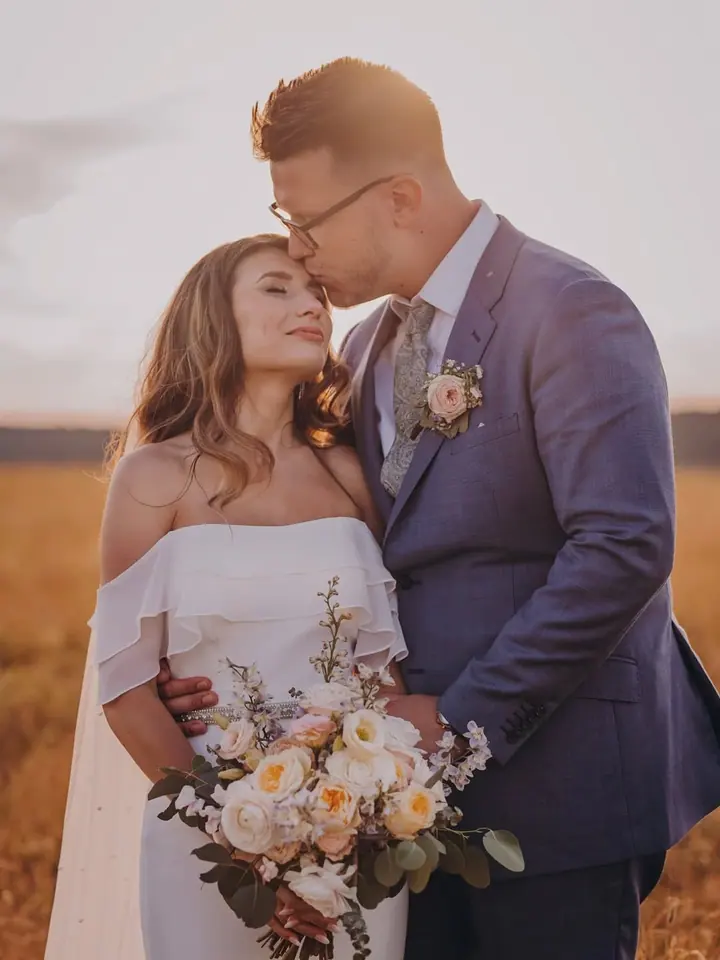
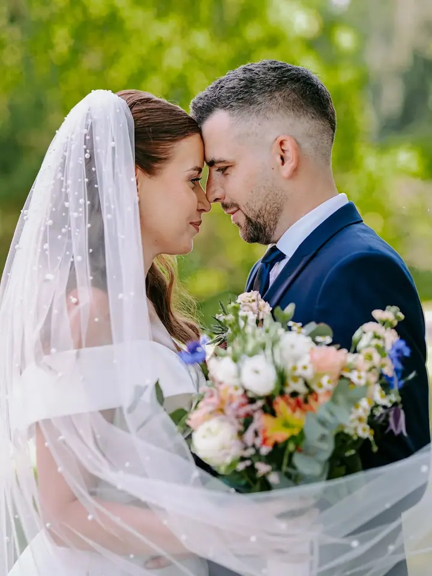
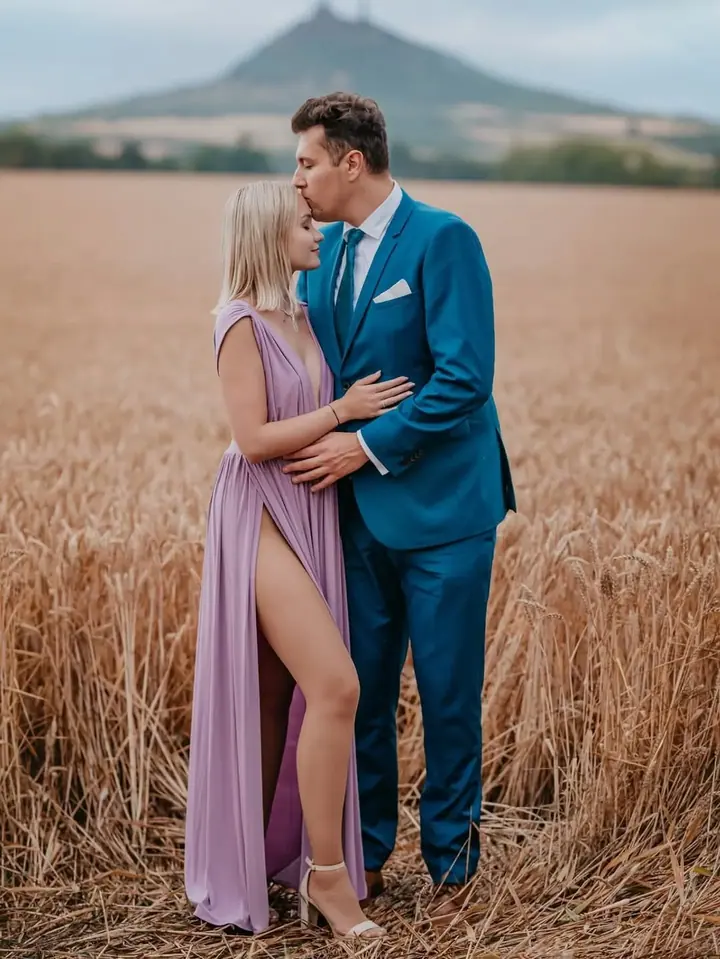
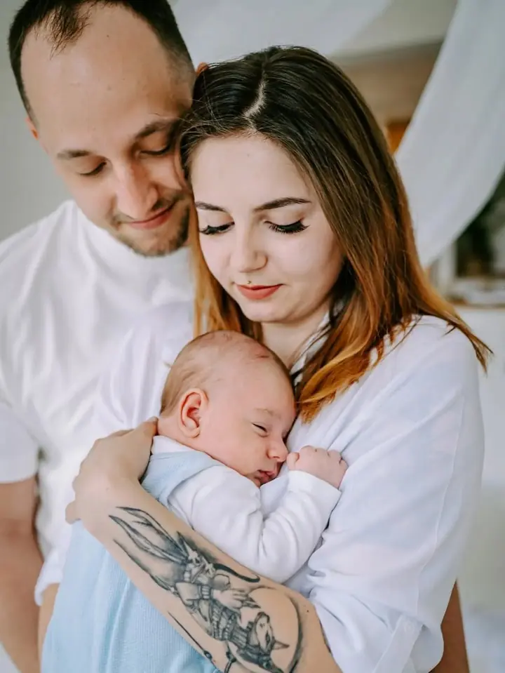

jedna
Svatby
Můžete si vybrat jen obřad se skupinovým focením, nebo celý den od příprav až po večerní párty. Fotím emoce, úsměvy i slzy štěstí a fotky dodávám rychle.

Svatební a rodinná fotografka · Ústí nad Labem, Ústecký kraj

Jmenuji se Kateřina Šmejkalová a fotím svatby, zamilované páry i rodiny v Ústí nad Labem a v celém Ústeckém kraji. Jsem máma a učitelka, takže vím, jak rychle velké dny i dětství utíkají.
Více o mně
Co fotím
jedna
Můžete si vybrat jen obřad se skupinovým focením, nebo celý den od příprav až po večerní párty. Fotím emoce, úsměvy i slzy štěstí a fotky dodávám rychle.
dvě
Jsem máma i učitelka, takže vím, jak rychle dětství a rodinné chvíle utíkají. Fotíme v ateliéru nebo venku, jak vám to bude příjemnější.
tři
Udělejte radost své drahé polovičce. Vyberu s vámi zajímavé místo a společně vytvoříme fotky, které budou připomínkou vaší lásky.
Fotím kulatá bříška i první dny miminka. Ke křehkosti těchto chvil přistupuji citlivě a s klidem.
Věci by se měly dělat zajímavě, ne jen správně.

Za objektivem
Řídím se heslem, že není dobré dělat věci vždy úplně správně, ale zajímavě. Podle návodu se dá udělat cokoliv, ale práce, která něco vyjadřuje, chce trochu kumštu. Podle toho vznikají i moje fotky.
Ráda zkouším nové věci a nápady. Zároveň chci, abyste se u focení cítili pohodlně, proto kladu důraz na přirozenost a nechávám chvílím jejich vlastní tempo. Jako máma i učitelka mám k dětem blízko a u rodinného focení se to hodí.
Fotím venku na místech, která spolu vybereme, nebo v prostorném Ateliéru Greiner. Tam si můžeme dát kafíčko a v klidu udělat krásnou památku. A když zrovna nefotím lidi, najdete mě u dravců.
Kateřina
Zavolejte, napište e-mail nebo vyplňte formulář. Ráda vám poradím ještě předtím, než se potkáme.
Probereme, co si představujete, vybereme balíček a místo. U svatby si sedneme i osobně, ať se dopředu poznáme.
Fotíme v ateliéru, venku nebo celý váš svatební den. Přinesu nápady a postarám se, abyste se cítili v pohodě.
Fotky pečlivě upravím a pošlu vám je co nejdřív, protože vím, jak se na ně těšíte.
Portfolio
Otázky
Balíček Silver za 7 500 Kč zahrnuje obřad a skupinové focení. Balíček Gold za 22 000 Kč pokryje celý den od příprav přes hostinu, portréty a novomanželský tanec až po večerní párty.
Focení v ateliéru stojí 2 900 Kč a dostanete 12 upravených fotek, každá další je za 150 Kč. Exteriérové focení vyjde na 1 900 Kč, každá další fotka za 100 Kč.
Většinou v Ústí nad Labem a v Ústeckém kraji. Fotit můžeme v Ateliéru Greiner nebo venku na místě, které vybereme spolu.
Určitě. Celým focením vás provedu, poradím s pózami a dám vám čas, abyste se uvolnili. Nejhezčí fotky stejně vznikají, když na foťák přestanete myslet.
Napište pár vět o tom, co si představujete. katarina.sm.1995@centrum.cz